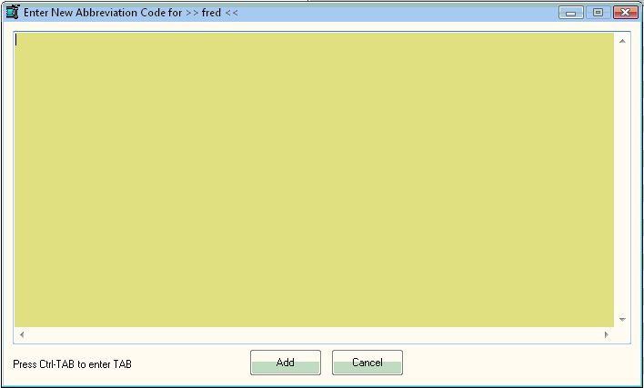
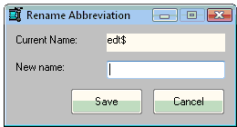

Abbrev Manager |
Previous Top Next |
Rather then manually add abbreviations to the "au3userabbrev.properties" and "au3.keywords.user.abbreviations.properties" files, this utility allows you to create, edit and delete abbreviations without fuss.
As the User abbreviations are loaded after the SciTE abbreviations supplied with the install, a User abbreviation will override a SciTE abbreviation of the same name. If during the creation or rename process there is a conflict between User and SciTE abbreviation names the manager will ask if the SciTE abbreviation is to be overridden. Note that the SciTE abbreviation is not deleted and removing the similarly-named User abbreviation will reenable it.
The abbreviations currently stored in the SciTE abbreviation files are loaded into internal lists - the radio buttons at lower left determine the list displayed. If the SciTE abbreviations are selected, a dialog asks for confirmation and the user can only override the existing SciTE abbreviation by adding a User abbreviation of the same name - the only buttons active are "Search" and "OverRide" (renamed from "Edit").
Entering an abbreviation into the input a top left and pressing "Search" will find and highlight the relevant abbreviation if it exists - a dialog will announce if it was not found. Double-clicking an abbreviation displays a dialog (blue background) showing the expanded abbreviation as it would be entered in the editor.
Pressing the "Create" button first checks that the new abbreviation entered into the input does not conflict with an existing abbreviation. A conflict with an existing SciTE abbreviation brings up a dialog offering the option to override that abbreviation (see next section). If there is no conflict an edit dialog (yellow background) opens to input the expanded text:

Enter the text as text it is to be entered into the editor when the abbreviation is expanded. In all dialogs of this type use Ctrl-TAB to enter a {TAB}, {ENTER} is entered as normal. Once the text is entered, pressing "Add" adds the abbreviation to the internal list; pressing "Cancel" abandons the creation process.
Pressing the "Edit" button brings up a similar dialog (red background) showing the current expanded text ready for amendment. The button reads "Override" when the SciTE abbreviations are listed and is the only action available. If the SciTE abbreviaiton is to be overridden, a dialog (orange background) containing the current expanded text of that abbreviation appears. Once the text is edited, pressing "Save" adds the abbreviation to the internal list; pressing "Cancel" abandons the process. Note that overridden abbreviations are added to the User abbreviation list - a dialog appears to confirm this.
Pressing the "Rename" button opens a dialog requesting the new name:

If on pressing "Save" the new name conflicts with an existing User abbreviation a dialog appears and the rename is canceled, as is the case when the "Cancel" button is pressed. If the name conflicts with a SciTE abbreviation a dialog offers the option to override it.
On pressing the "Delete" button, a dialog asks for confirmation and then the abbreviation is removed from the internal list.
Pressing "Save" stores the current internal list of abbreviations in the SciTE User abbreviation and properties files. Pressing "Cancel" abandons all changes.